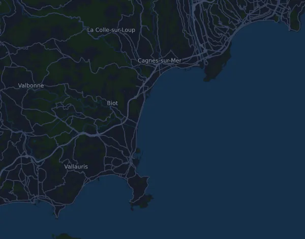

Marathon des Alpes-Maritimes Nice-Cannes – Marathon 42,5 km
- Distanz
- 42,5 km
- Höhenmeter
- ↑ 306 m
- Höchster Punkt
- 35 m ü. M.
- Untergrund
- Straße
- Profil
- Leicht wellig
- Start
- 08:00 Uhr
- Verpflegungsstellen
- 18
Höhenprofil
Mit Mila vorbereiten
Mila ist eine Lauf-Coach-App. Nimmst du einen Lauf in deinen Plan auf, plant der Coach deine Wochen bis zum Start nach deiner Form und gibt dir eine Zielzeitprognose und einen Plan für Tempo, Getränke und Verpflegung auf der Strecke.

Der richtige Lauf am richtigen Tag.
Die Strecke

Über die Strecke
Marathon des Alpes-Maritimes Nice-Cannes – Marathon ist ein Straßenlauf in Nice, Frankreich, über 42,5 km. Die Strecke hat insgesamt 306 Höhenmeter bergauf und 307 bergab, 7,2 m pro km, und ist damit leicht wellig. Der höchste Punkt liegt auf 35 m ü. M., der tiefste auf -1 m.
Der größte Anstieg beginnt bei km 26,5: 25 Höhenmeter auf 1,6 km mit durchschnittlich 1,6 % Steigung, bis auf 35 m.
Der Veranstalter nennt 18 Verpflegungsstellen, die erste bei km 5,0 und die letzte bei km 40,0.
In der Mila-App beschreibt der Coach die Strecke ausführlich in deiner Sprache und plant dein Pacing und deine Verpflegung dafür.
Anstiege
| Beginnt bei | Länge | Höhenmeter | Steigung | Gipfel (m ü. M.) |
|---|---|---|---|---|
| km 26,5 | 1,6 km | 25 m | 1,6 % | 35 |
Anmeldung und Startnummer
Startnummernausgabe
- Donnerstag, 5. November 2026, 12:00–19:00 Uhr
- Freitag, 6. November 2026, 10:00–19:00 Uhr
- Samstag, 7. November 2026, 09:00–20:00 Uhr
Marathon Expo, Centre des Congrès Nicéa, Port de Nice (Quai Amiral Infernet), Nice
Quelle: marathon06.com, abgerufen am 25. Oktober 2026
Vor dem Start
Verpflegungsstellen
| Bei | Angebot |
|---|---|
| km 5,0 | Wasser |
| km 7,5 | Wasser |
| km 10,0 | Wasser, Sportgetränk, Essen |
| km 13,0 | Wasser |
| km 15,0 | Wasser, Sportgetränk, Essen |
| km 17,0 | Wasser |
| km 19,5 | Wasser, Sportgetränk, Essen |
| km 22,0 | Wasser |
| km 25,0 | Wasser, Sportgetränk, Essen |
| km 27,0 | Wasser |
| km 29,0 | Wasser |
| km 30,5 | Wasser, Sportgetränk, Essen |
| km 32,5 | Wasser |
| km 34,0 | Wasser |
| km 35,5 | Wasser, Sportgetränk, Essen |
| km 37,0 | Wasser |
| km 38,5 | Wasser, Sportgetränk, Essen |
| km 40,0 | Wasser |
Startzeiten
- 08:00 Uhr
Quelle: marathon06.com, abgerufen am 15. Oktober 2026
Pace-Tabelle
Marathon des Alpes-Maritimes Nice-Cannes – Marathon 42,5 km in 3:00:00 – Pace pro km und Zwischenzeiten
4:14 pro km · km 10: 42:22 · km 21,1: 1:29:24 · km 30: 2:07:07 · km 40: 2:49:29 · Ziel: 3:00:00
Marathon des Alpes-Maritimes Nice-Cannes – Marathon 42,5 km in 3:30:00 – Pace pro km und Zwischenzeiten
4:57 pro km · km 10: 49:26 · km 21,1: 1:44:18 · km 30: 2:28:18 · km 40: 3:17:44 · Ziel: 3:30:00
Marathon des Alpes-Maritimes Nice-Cannes – Marathon 42,5 km in 4:00:00 – Pace pro km und Zwischenzeiten
5:39 pro km · km 10: 56:30 · km 21,1: 1:59:13 · km 30: 2:49:29 · km 40: 3:45:59 · Ziel: 4:00:00
Marathon des Alpes-Maritimes Nice-Cannes – Marathon 42,5 km in 4:30:00 – Pace pro km und Zwischenzeiten
6:21 pro km · km 10: 1:03:34 · km 21,1: 2:14:07 · km 30: 3:10:41 · km 40: 4:14:14 · Ziel: 4:30:00
Die Zeiten setzen ein gleichmäßiges Tempo auf der ganzen Strecke voraus. Das ist reine Rechnung, keine Prognose: an Anstiegen, im Gedränge und an Verpflegungsstellen schwankt das Tempo.
Häufige Fragen
Wann findet Marathon des Alpes-Maritimes Nice-Cannes – Marathon 42,5 km statt?
Marathon des Alpes-Maritimes Nice-Cannes – Marathon 42,5 km findet am Sonntag, 8. November 2026 statt. Prüfe Datum und Startzeit beim Veranstalter.
Wann ist der Start bei Marathon des Alpes-Maritimes Nice-Cannes – Marathon 42,5 km?
Laut Veranstalter: 08:00 Uhr.
Wie lang ist Marathon des Alpes-Maritimes Nice-Cannes – Marathon 42,5 km und wie viele Höhenmeter hat die Strecke?
Der Lauf ist 42,5 km lang mit 306 Höhenmetern bergauf und 307 bergab. Der höchste Punkt liegt auf 35 m ü. M.
Wie ist die Strecke von Marathon des Alpes-Maritimes Nice-Cannes – Marathon 42,5 km?
Die Strecke ist leicht wellig, mit durchschnittlich 7,2 Höhenmetern pro km. Sie hat einen Anstieg ab 25 Höhenmetern, bei km 26,5: 25 Höhenmeter auf 1,6 km. Sie führt vom Start zu einem Ziel an einem anderen Ort. Der Untergrund ist Straße.
Gibt es Verpflegungsstellen bei Marathon des Alpes-Maritimes Nice-Cannes – Marathon 42,5 km?
Ja. Der Veranstalter nennt 18 Verpflegungsstellen: km 5,0 (Wasser); km 7,5 (Wasser); km 10,0 (Wasser, Sportgetränk, Essen); km 13,0 (Wasser); km 15,0 (Wasser, Sportgetränk, Essen); km 17,0 (Wasser); km 19,5 (Wasser, Sportgetränk, Essen); km 22,0 (Wasser); km 25,0 (Wasser, Sportgetränk, Essen); km 27,0 (Wasser); km 29,0 (Wasser); km 30,5 (Wasser, Sportgetränk, Essen); km 32,5 (Wasser); km 34,0 (Wasser); km 35,5 (Wasser, Sportgetränk, Essen); km 37,0 (Wasser); km 38,5 (Wasser, Sportgetränk, Essen); km 40,0 (Wasser).
Wie teile ich mir Marathon des Alpes-Maritimes Nice-Cannes – Marathon 42,5 km ein?
Lauf eher mit gleichmäßiger Anstrengung als mit gleichmäßigem Tempo: Lass das Tempo an den Anstiegen sinken, hol es zurück, wo es flacher wird, und halte dich auf den ersten Kilometern zurück. Die größten Anstiege beginnen bei km 26,5. In Mila bekommst du einen Pace-Plan für genau diese Strecke, passend zu deiner Form.
Ähnliche Läufe
Weitere Läufe in der Nähe
- SaintéLyon (80 km)28. November 2026 · Saint-Étienne, Frankreich
- Marathon de La Rochelle Serge Vigot – Marathon 42,2 km29. November 2026 · La Rochelle, Frankreich
- Corrida de Houilles – 10 km La Populaire27. Dezember 2026 · Houilles, Frankreich
- EcoTrail Paris – Trail 80 km (Printemps)20. März 2027 · Élancourt (Colline d'Élancourt), Frankreich
- MaXi-Race – tOur du Lac en solo (1 jour) 100 km29. Mai 2027 · Annecy, Frankreich
- Grand Trail du Saint Jacques - 100K 88 km19. Juni 2027 · Monistrol-d'Allier, Frankreich
Mit Mila vorbereiten
Der richtige Lauf am richtigen Tag.
Die Angaben stammen aus der Streckendatei und den Informationen des Veranstalters. Prüfe Datum, Startzeiten und Regeln beim Veranstalter.
Mila ist nicht mit dem Veranstalter oder den Sponsoren des Laufs verbunden und wird von ihnen weder gesponsert noch empfohlen. Namen und Marken gehören ihren Inhabern. Veranstalter oder Rechteinhaber? Änderung oder Entfernung beantragen